Nov 22Sunday
- Smoother on slower laptops and phones: less drawing while the map holds still, and traffic thins sooner when a device is struggling
- Planes stay on the map when the flight-tracking feeds get busy
A 3D model of the city, redrawn tile by tile by an image model. Infused with simulated drivers and real airplanes, boats, public transit, and weather conditions.
Ari Dutilh · November 2026 · views
Small SF is one enormous illustration of San Francisco, from Alcatraz to Dolores Park and beyond, where you can explore the streets you know by dragging and zooming around. Muni runs through it with live data, boats appear in the bay whenever their transponders are switched on, you can spot planes flying by overhead, the lighting follows the real sun and weather, and the fog follows what a weather satellite sees.
This project started as a San Francisco version of Isometric Seattle made by Dylan Martin, which I happened to discover during my first trip to Seattle. It began as a fairly simple idea and kept growing into something far more complex, and far more alive. Buckle in.
Everything starts from Google's Photorealistic 3D Tiles, the same 3D scans of the city you see in Google Earth. I (Claude) render them in a headless browser as an orthographic view: instead of shrinking with distance like a photo, everything is drawn at one scale, so parallel streets stay parallel and a building at the top of the screen is the same size as one at the bottom. The view tilts down 45° and looks at the city southwest from the bay. People call this kind of map isometric.
The whole city gets cut into a grid of tiles, each rendered at 2048 pixels. The renders are accurate but kind of ugly: melted trees, blobby cars, and buildings that sag or blend with generation seams.
Each tile goes to an image model with a prompt and an already-drawn tile as a style reference, and comes back as a 2880-pixel illustration of the exact same block. Drag the slider to compare:
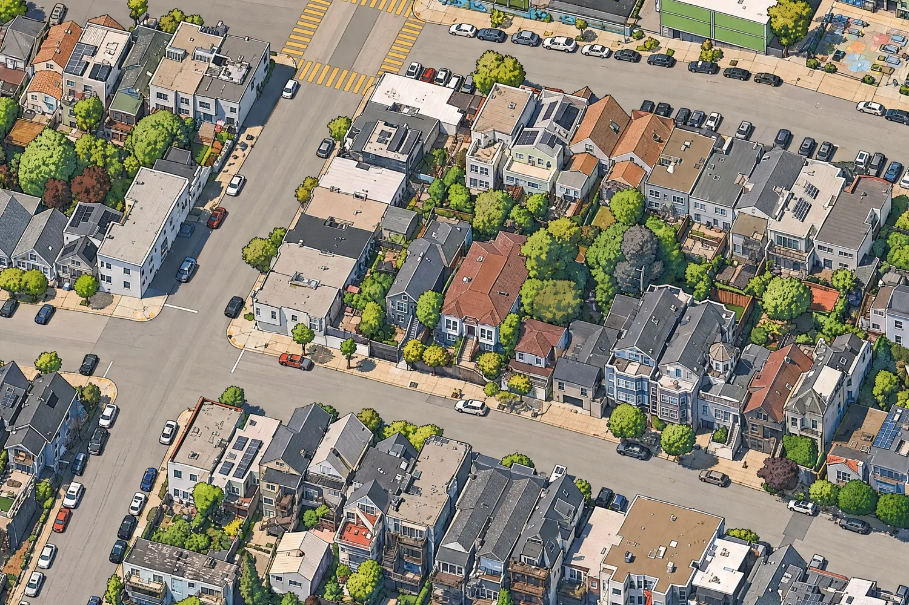
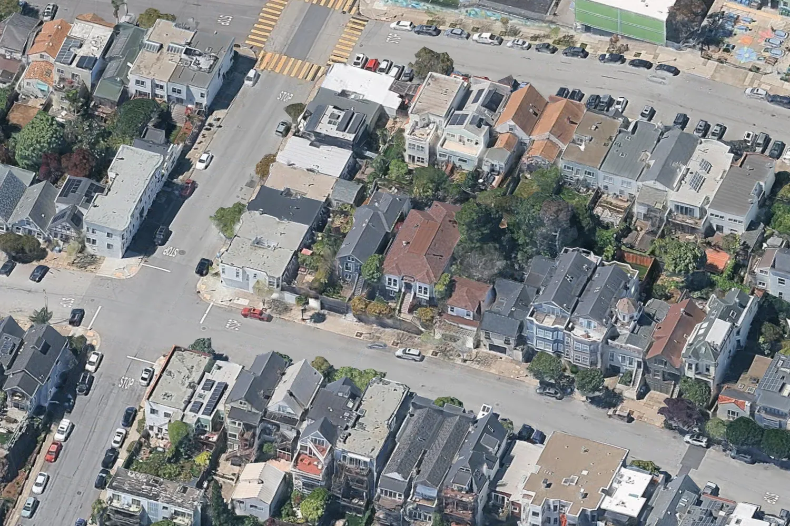
The first 300 or so tiles went through Higgsfield, and the rest through OpenAI's GPT Image 2 directly, at its largest size and highest quality. The cheaper settings didn't hold up: medium comes out softer, and low quality starts inventing back gardens that aren't there (which would be nice, but alas). High quality it is, everywhere.
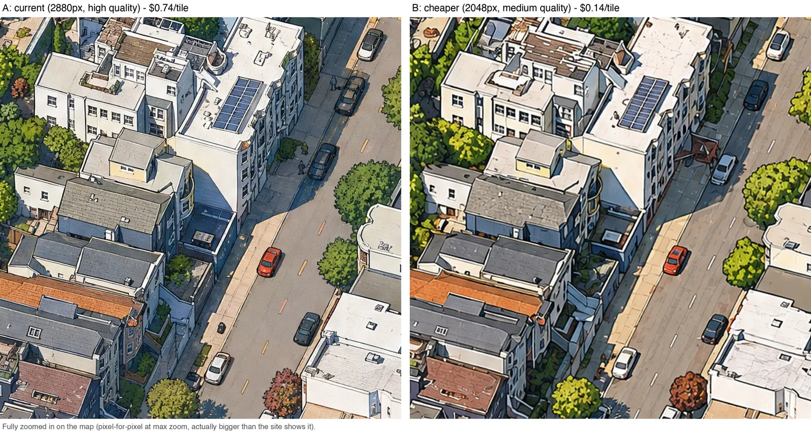
I’ve been growing the map outward from the Ferry Building in one connected piece to keep illustrated SF as cohesive as possible even while unfinished. Here's every chunk so far, numbered in the order it went live:

Inside a chunk, tiles go to OpenAI in batches of 15, and each batch comes back whenever OpenAI gets to it, so halfway through, a neighborhood looks like a patchwork:
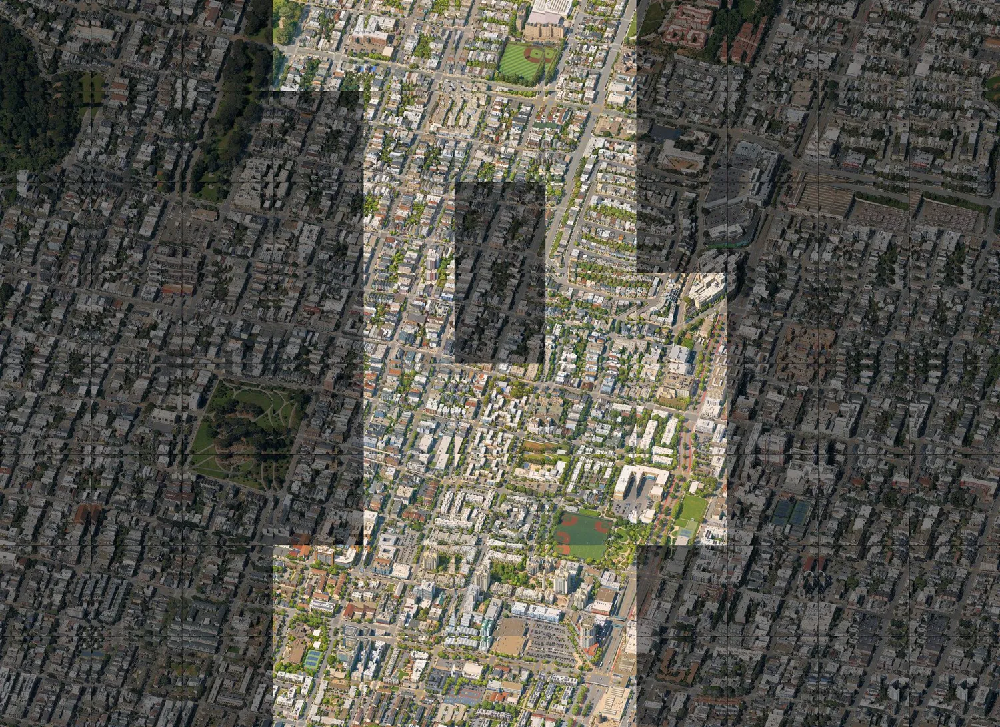
The model draws each tile on its own, so neighboring illustrations never quite match where they overlap: a roof is a slightly different shade, a tree has moved over a couple feet, a car has changed color. Cross-fade the overlap and you get two faded copies of the same thing on top of each other, like the parked cars and storefronts on Valencia Street here:
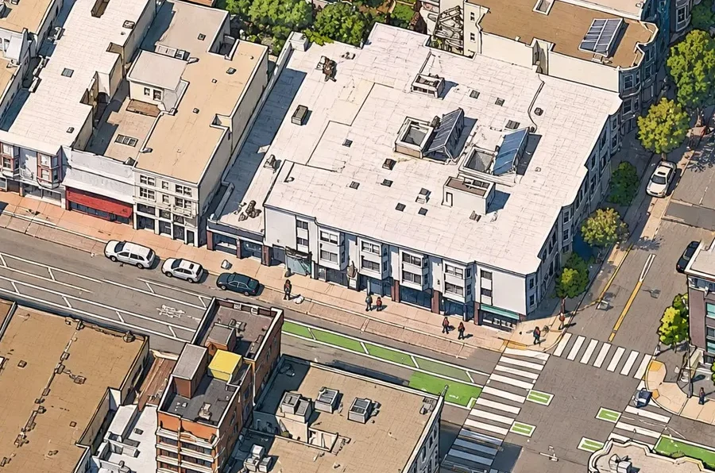
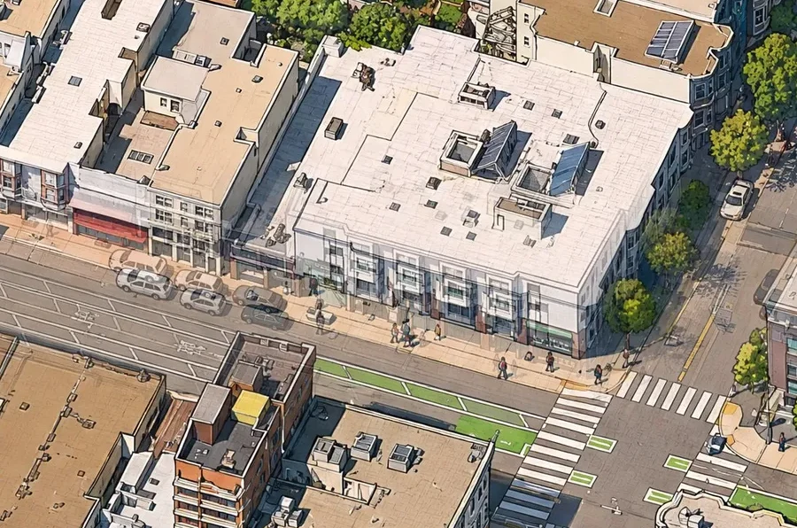
In each overlap, it finds the path where the two drawings agree most, usually down the middle of a street or along a roofline, switches from one tile to the other along that path, and softens just 14 pixels on either side.
A drawing of a city is nice, but I wanted this to feel as alive as an ant colony. The mix of simulated car traffic and real transit and weather data makes it feel like you're watching a familiar little world. One that can also tell you when your bus is coming!
There's no live feed of every car in San Francisco, so the cars are simulated. That said, they are actually simulated on the real city: all 8,673 street segments from OpenStreetMap, cut into blocks at every intersection, with the 1,562 real traffic lights at their real intersections.
Every corner and intersection runs street legally. Signals cycle green, yellow, red, with a beat of all-red before the cross street moves forward. Quiet corners are all-way stops. Side streets yield to the main road and wait for a gap in traffic. Cars keep right, follow the car in front even around a corner, slow down to turn, and when the light turns yellow they stop if they comfortably can. Nobody runs reds (though I’m considering adding some fun crime-ridden easter-eggs soon).
We also have real traffic fluctuation: a morning rush around 8, a longer evening one around 5:30, and a lull in the middle of the night. They're little 3D models in very San Francisco colors (lots of white, black and silver, the odd yellow cab, white vans, box trucks), and after dark they get headlights and taillights.
The driving wasn’t the only complicated part; so was the map’s angle. For a while, cars on the freeway on-ramp at 13th and Mission were driving across the tops of the trees next to it. In this view, height and distance point the same way on screen: something higher up is drawn higher on the screen, but so is something farther away. So a car at the wrong height doesn't look like it's floating or sinking. It just shows up in the wrong place, on a sidewalk, out in the bay or on somebody's roof. The fix is to give every point of every street its real height, read from a depth render of the city (more on that below). Freeways sit 30 to 80 feet up, the Bay Bridge's deck climbs to over 230 feet above the water, and streets hidden between buildings get no cars at all.
Some of the cars are robotaxis: Waymo's Jaguar I-Paces and newer Ojai vans, Zoox's toaster cars and Tesla's gold Cybercabs. They make up about 7% of traffic, more late at night. Click one to ride along. Then pick a destination, by clicking the map or searching for a place, and it drives there over the real one-way streets. It takes the quickest route, with a small penalty for every turn, and pulls up at the curb when it arrives.
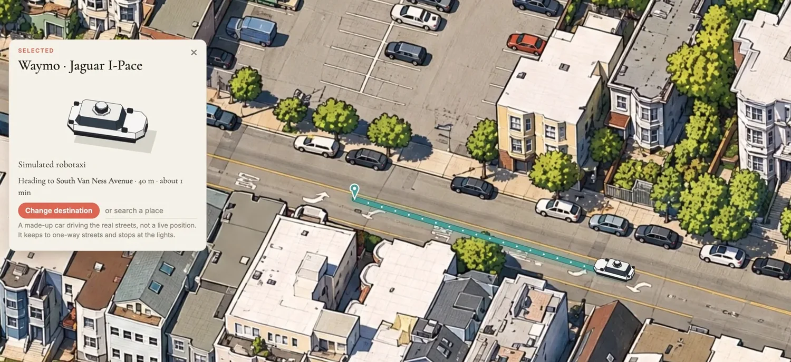
Looking at the city from a bird’s-eye view top down, nothing ever blocks your view of traffic. At a 45° angle, however, almost everything does. If the vehicles can’t tell what’s in front of them, they get drawn on top of the rooflines and trees that should hide them, and that’s what makes the whole map feel fake. Early on, in an attempt to fix this, buses turning onto a side street would just blink out of existence mid-turn. That looked cheap.
The fix came from the same depth render that gives the streets their heights. For every point on the map, it records how far the camera is from whatever it sees there. Since the drawing keeps every building where the render had it, that depth lines up with the illustration too. So each bus, train and car checks its own outline against the depth, and wherever something in the drawing is closer to the camera than the vehicle, that part of the vehicle fades out of view. The result: a bus slides behind the corner of a building a few pixels at a time, and a car passes under a tree with its roof showing through the gaps in the leaves. Really high fidelity stuff.
The citywide depth grid only has a reading every 1.6 meters, which is plenty from far out and much too blocky up close (cars would vanish a whole cell early). So when you zoom in, the map loads a much finer grid for just the blocks on screen: a reading every 28 centimeters, to the nearest 5 cm. Trains are checked car by car, so the back half can be under the freeway while the front is out in the sun. Live buses and trains never vanish completely: when one is entirely behind something, it fades to a low-opacity version of itself, so you don't lose the one you're following. The subway works the same way in TV mode, where you can see the trains in the tunnel under the station right through the street.
Turns out a big block of empty water is too tempting for GPT Image 2. A tile that's nothing but bay water is a blank canvas, and GPT treats it like one. Hand it open water and an "isometric San Francisco" prompt and it goes wild painting half the city lol. Pure water tiles never go to the model anymore. They get a plain painted bay instead.
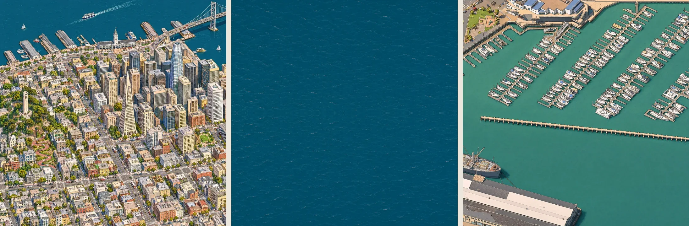
Buses on rooftops. The live layers need to know how high the ground is everywhere, so alongside the drawing I render a height map of the city: one big image where each pixel records the ground height at that spot. For a while, buses were driving across roofs and through parks. The cause: the image was too big, and the browser quietly shrinks images past a certain size without saying so. So the shrunken height map no longer lines up with the drawing, allowing a bus on Castro Street to read its height from somewhere else entirely (often a rooftop or a hill). Now the height map renders in pieces small enough that the browser leaves them alone, and they get stitched back together.
My own model. To see how close I could get on my own, I (again, really Claude) trained a style model on the drawings we already had and drew whole tiles with it on rented GPUs. It got closer than I expected! I actually felt it looked (maybe?) better than GPT Image 2 from afar, but quality loss for things like detailing on houses or more intricate illustrations like substations and chainlink fences was pretty rough.
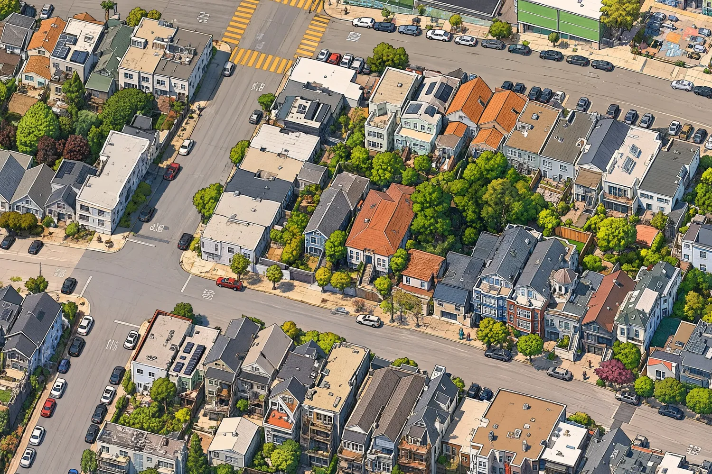
GPT Image 2My own modelOpen the map and it drops you down through the clouds onto the city, the same cream clouds that ring the edge of the map.
Easter eggs: I want to add many many more of these once the map is closer to completion, but for now Small SF has one. My friend Cody works at Meter and likes Capybaras, so naturally he is holding one outside of Meter HQ. Claude's code-drawn Cody sucked so I had GPT make a sprite that Claude could animate to make him wave.
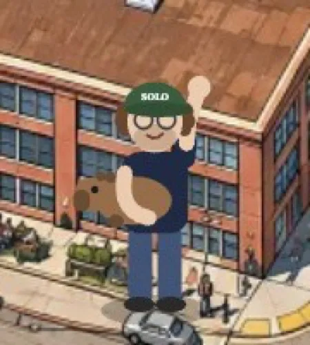
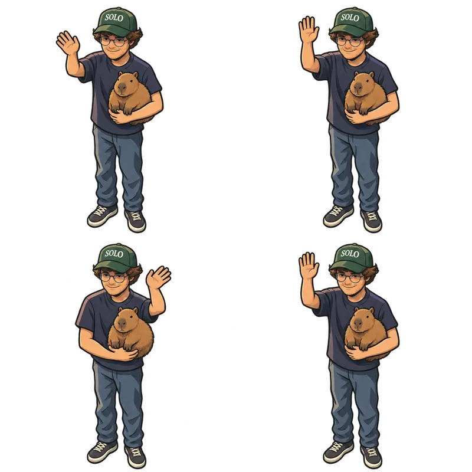
More than two fifths of the city is drawn so far, from the Embarcadero out through SoMa, the Mission, Bernal Heights, Noe Valley, the Castro, Hayes Valley and the Haight, up over Twin Peaks to Glen Park, and north through North Beach, Russian Hill, Pacific Heights and the Marina to the Presidio and Crissy Field. The rest of the map is still the 3D render, waiting its turn. Fisherman's Wharf, Golden Gate Park, the Sunset, the Richmond and everything else are coming, one neighborhood at a time. The project isn't open source currently, but I'd love help: API credits to pay for the drawing, or time, whether that's reporting bugs, testing it on your phone, or spotting what I got wrong about your block.
What surprised me most is where the hard parts turned out to be. Drawing the city was the easy bit. The hard part was then making the map feel alive. How high the freeway is, what's in front of a bus, why a tile of empty bay turns into a whole imaginary city, etc. Solving those is what turned a pretty map into the micro-civilization I was after: 1,322 drawn tiles, hundreds of real buses, trains and boats, and a few hundred made-up drivers stopping at 1,562 real red lights. 1,603 tiles to go!
Got an idea, a bug, or a spot you want drawn next? Email me.
Every new neighborhood is a few hundred tiles, and every tile is an image-model call I pay for out of pocket. If you'd like to see your corner of San Francisco drawn sooner, chipping in for credits genuinely speeds things up. Any amount helps, and I'll put your neighborhood near the top of the list.
What's new on the map is under Changes, and the data and people behind it under Thanks.
Newest first. Anything with a Try it link opens the map right on it.
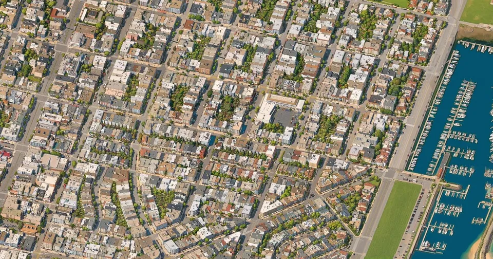
The Marina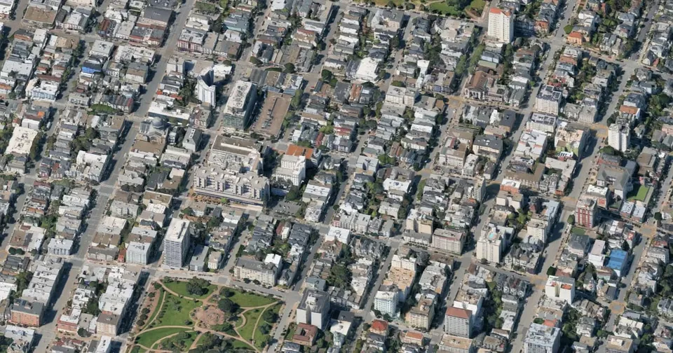
Pacific Heights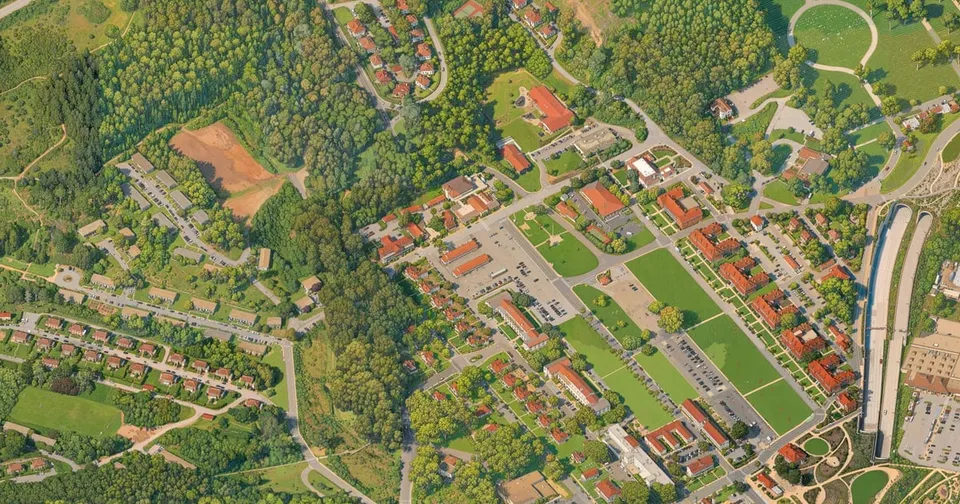
The Presidio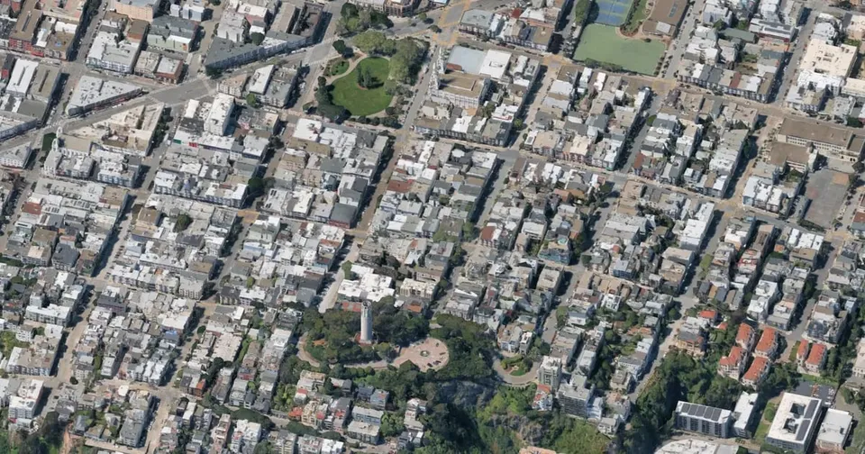
North Beach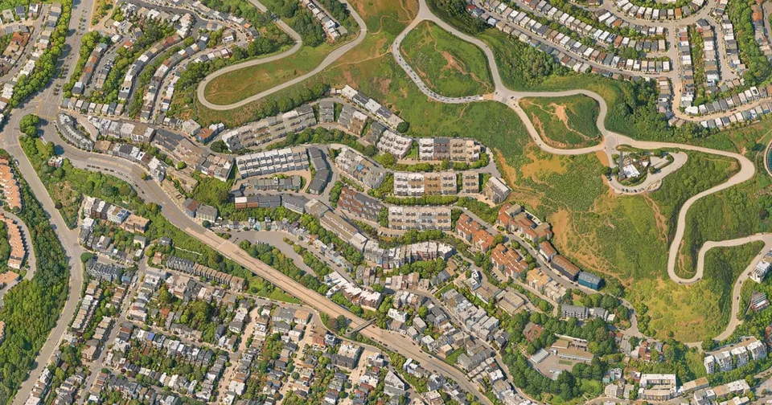
Twin Peaks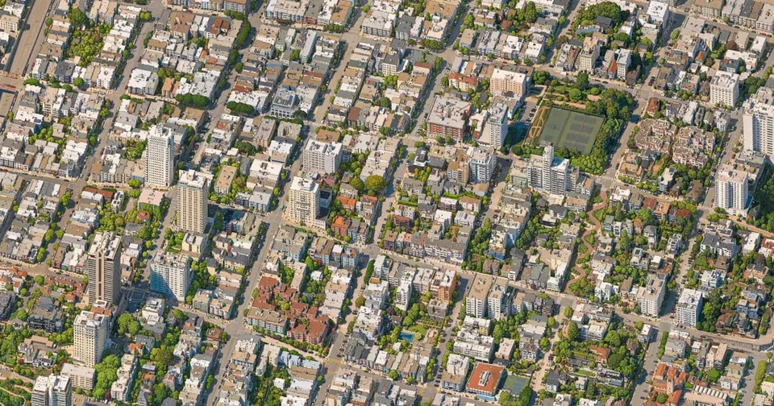
Russian HillThe data, the tools and the people behind it. Want to support it? Chip in.
Photorealistic 3D Tiles, the scans behind Google Earth. Map data ©Google
2,925 tiles rendered from itOpenAI's image model redraws each render as an illustration
1,322 tiles drawn so farLive Muni, Golden Gate Transit and AC Transit, placed by arrival predictions
Buses and trains on the map nowEvery street, lane and signal the traffic drives on. © OpenStreetMap contributors
683 km of streets, 1,396 signalsThanks to Kai, Conrad, Alistair and Jack for reading drafts of the launch tweet and about page.
Every new neighborhood is a few hundred tiles, and every tile is an image-model call I pay for out of pocket. If you'd like to see your corner of San Francisco drawn sooner, chipping in for credits genuinely speeds things up. Any amount helps, and I'll put your neighborhood near the top of the list.